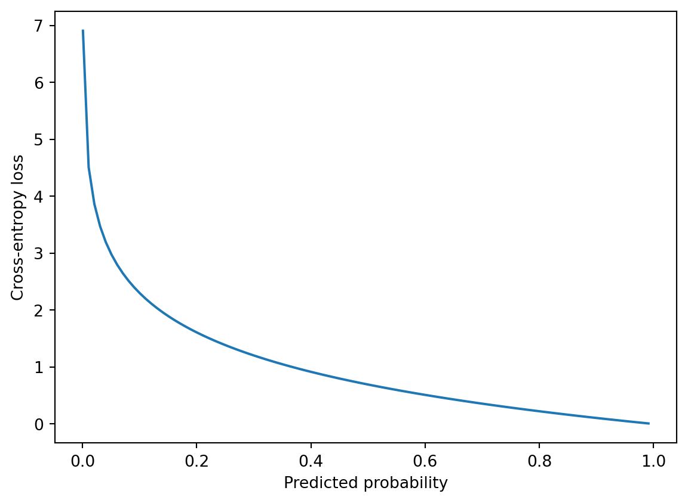
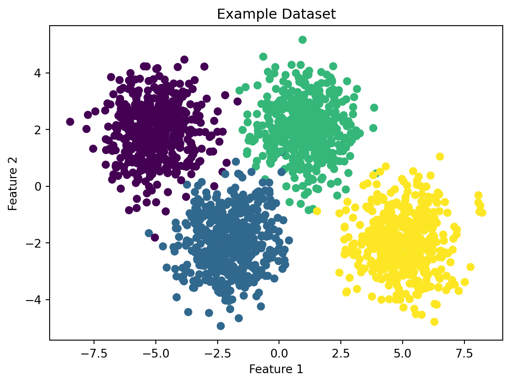

Multiclass Classification with Softmax Regression and Neural Networks with Tensorflow
1. What is a multiclass classification problem?
A multiclass classification problem is a type of supervised learning problem in machine learning, where the goal is to predict the class or category of an input observation, based on a set of known classes. In a multiclass classification problem, there are more than two possible classes, and the algorithm must determine which of the possible classes the input observation belongs to.
For example, if we want to classify images of animals into different categories, such as dogs, cats, and horses, we have a multiclass classification problem. In this case, the algorithm must learn to distinguish between the different features of each animal to correctly identify its class.
Multiclass classification problems can be solved using various algorithms, such as logistic regression, decision trees, support vector machines, and neural networks. The performance of these algorithms is typically evaluated using metrics such as accuracy, precision, recall, and F1 score.
2. What is softmax regression?
Softmax regression is a type of logistic regression that is often used for multiclass classification problems. In a multiclass classification problem, the goal is to predict the class of an input observation from a set of possible classes. Softmax regression provides a way to model the probabilities of the input observation belonging to each of the possible classes.
In softmax regression, the model’s output is a vector of probabilities that represent the likelihood of the input observation belonging to each of the possible classes. The softmax function is used to map the output of the linear regression model to a probability distribution over the classes, ensuring that the probabilities of all classes sum to one.
The goal of softmax regression is to predict the probability of an input observation belonging to each of the possible classes. To achieve this, we compute the weighted sum of the input features \(\vec{x}\) with a weight vector \(\vec{w}_j\) for each class \(j\), and add a bias term \(b_j\). This gives us a scalar value \(z_j\) for each class \(j\). We then apply the softmax function to the \(z\) values to obtain a probability distribution over the possible classes.
More specifically, for a given input observation, we compute the scalar values \(z_j\) for all \(N\) classes as follows:
The equations provided describe how the model computes a set of scores for each class, which are used to compute the probability distribution over the classes.
Each of the equations describes a linear regression model that computes a score, \(z_i\), for class \(i\) based on the input vector \(\vec{x}\) and a set of weights, \(\vec{w}_i\), and bias, \(b_i\).
Scores refer to the scalar values \(z_j\) computed for each class \(j\). These scores represent the model’s confidence in the input observation belonging to each of the possible classes, and are used to compute the final probability distribution over the classes.
For example, if we have three classes (1, 2, and 3), and the model computes scores of 0.7, 0.2, and 0.1 for each class respectively, this would indicate that the model is most confident that the input observation belongs to class 1, but has lower confidence that it belongs to classes 2 and 3. The probabilities computed from these scores would reflect this relative confidence as well.
Let’s break down the first equation in the example:
\[z_1 = \vec{w}_1 \cdot \vec{x} + b_1\]
Here, \(\vec{w}_1\) is a vector of weights that corresponds to the input features. Each weight represents the importance of a feature in determining the score for class 1. The dot product of the weight vector and input vector, \(\vec{w}_1 \cdot \vec{x}\), is a weighted sum of the input features that determines the contribution of each feature to the score. The bias term, \(b_1\), represents a constant offset that can be used to shift the scores for class 1 up or down.
The scores for classes 2 and 3 are computed using similar equations, but with different weight vectors and biases. The scores can be positive or negative, depending on the input features and the weight values. The sign and magnitude of the scores determine which classes are more likely to be predicted by the model.
To convert the scores to a probability distribution over the classes, the model uses the softmax function, which takes the exponent of each score and normalizes them to sum up to 1. The softmax function outputs a vector of probabilities, where each element represents the probability of the input belonging to a specific class. \[
a_j = \frac{e^{z_j}}{\sum\limits_{k=1}^N e^{z_k}} = P(y=j \mid \vec{x})
\]
In softmax regression, the cost function is used to measure how well the model predicts the probability of an input belonging to each of the possible classes. The goal is to find the set of weights and biases that minimize the cost function, which measures the difference between the predicted probabilities and the true labels.
The cross-entropy loss is a commonly used cost function for softmax regression. The cross-entropy loss is a measure of the dissimilarity between the predicted probability distribution and the true probability distribution. The cross-entropy loss is given by the following two identical formulas:
\[
J(\vec{w},b) = -\frac{1}{N}\sum_{i=1}^{N}\sum_{j=1}^{k}y_{ij}\log(\hat{y}_{ij})
\] where \(\hat{y}_{ij}\) is the predicted probability of example \(i\) belonging to class \(j\)\[
\text{loss}(a_1, a_2, \dots, a_n, y) =
\begin{cases}
-\log(a_1) & \text{if } y = 1 \\
-\log(a_2) & \text{if } y = 2 \\
\vdots & \vdots \\
-\log(a_n) & \text{if } y = n
\end{cases}
\]
Using our example: \[
\text{loss}(a_1, a_2, a_3, y) = \begin{cases}
-\log(a_1) & \text{if } y = 1 \\
-\log(a_2) & \text{if } y = 2 \\
-\log(a_3) & \text{if } y = 3
\end{cases}
\]
where \(n\) is the number of training examples, \(k\) is the number of possible classes, \(y_{ij}\) is the true label for example \(i\) and class \(j\), and \(\hat{y}_{ij}\) is the predicted probability for example \(i\) and class \(j\).
The cross-entropy loss can be interpreted as the average number of bits needed to represent the true distribution of the classes given the predicted distribution. A lower cross-entropy loss indicates that the predicted probabilities are closer to the true probabilities.
During training, the model adjusts the weights and biases to minimize the cross-entropy loss. This is typically done using an optimization algorithm such as gradient descent. The gradient of the cost function with respect to the weights and biases is computed, and the weights and biases are updated in the direction of the negative gradient to reduce the cost.
In summary, the cost function in softmax regression measures the difference between the predicted probability distribution and the true label distribution, and is used to train the model to make better predictions by adjusting the weights and biases to minimize the cost.
Here is a visualization of the loss function in python:
import matplotlib.pyplot as pltimport numpy as np# Define the range of values for the predicted probabilityy_hat = np.arange(0.001, 1.0, 0.01)# Define the true label as 1 for this exampley_true =1# Compute the cross-entropy loss for each value of y_hatloss =- y_true * np.log(y_hat) - (1- y_true) * np.log(1- y_hat)# Plot the loss functionplt.plot(y_hat, loss)plt.xlabel('Predicted probability')plt.ylabel('Cross-entropy loss')plt.show()

In this example, we define a range of values for the predicted probability, y_hat, and set the true label to 1 for simplicity. We then compute the cross-entropy loss for each value of y_hat using the formula for the cross-entropy loss. Finally, we plot the loss function as a function of the predicted probability.
The resulting plot should show a U-shaped curve, with the minimum value of the loss occurring at a predicted probability of 1.0 for the true class and 0.0 for the other class.
The U-shaped curve of the cross-entropy loss function is a reflection of the way the loss function penalizes incorrect predictions. The intuition behind this shape is as follows:
If the model correctly predicts the probability of the true class to be 1.0 (i.e., the predicted probability distribution perfectly matches the true label distribution), then the loss function evaluates to 0.0. This is the minimum possible value of the loss function, and corresponds to the best possible prediction.
As the predicted probability of the true class decreases from 1.0, the loss function begins to increase. This reflects the increasing penalty for incorrectly predicting the probability of the true class.
As the predicted probability of the true class approaches 0.0, the loss function increases very rapidly. This reflects the fact that the model is very confident in an incorrect prediction, and the penalty for this kind of error is very high.
Similarly, as the predicted probability of the true class approaches 1.0 from below, the loss function increases very rapidly again. This reflects the fact that the model is not confident enough in the correct prediction, and the penalty for this kind of error is also very high.
Finally, as the predicted probability of the true class approaches 1.0 from above, the loss function begins to increase more slowly again. This reflects the fact that the model is becoming more confident in the correct prediction, and the penalty for being slightly off is lower than for being very wrong.
Overall, the U-shaped curve of the cross-entropy loss function reflects the way that the model is penalized for incorrect predictions. The loss function is high when the model is very confident in an incorrect prediction, or not confident enough in a correct prediction, and is low when the model makes a perfect prediction.
We can also visualize what we expect a softmax regression model to look like:
This code generates a scatter plot of the data points, with each class represented by a different color. It then plots the decision boundaries of the classifier, which are represented by the colored regions. The regions are created by classifying a large grid of points that spans the plot, and then plotting the regions of the grid that correspond to each class.
4. Neural Networks
Introduction
A neural network is a type of machine learning algorithm that is inspired by the structure and function of the human brain. It consists of layers of interconnected nodes, or neurons, that can learn to recognize patterns in data and make predictions or decisions based on that input.
Neural networks are used in a wide variety of applications, including image and speech recognition, natural language processing, predictive analytics, robotics, and more. They have been especially effective in tasks that require pattern recognition, such as identifying objects in images, translating between languages, and predicting future trends in data.
Neural Network Architecture
A neural network consists of one or more layers of neurons, each of which takes input from the previous layer and produces output for the next layer. The input layer receives raw data, while the output layer produces predictions or decisions based on that input. The hidden layers in between contain neurons that can learn to recognize patterns in the data and extract features that are useful for making predictions.
Each neuron in a neural network has a set of weights and biases that determine how it responds to input. These values are adjusted during training to improve the accuracy of the network’s predictions. The activation function of a neuron determines how it responds to input, such as by applying a threshold or sigmoid function.
from IPython.display import ImageImage(filename='Neural Networks/ai-artificial-neural-network-alex-castrounis.png')
The input layer: The three blue nodes on the left side of the diagram represent the input layer. This layer receives input data, such as pixel values from an image or numerical features from a dataset.
The hidden layer: The four white nodes in the middle of the diagram represent the hidden layer. This layer performs computations on the input data and generates output values that are passed to the output layer.
The output layer: The orange node on the right side of the diagram represents the output layer. This layer generates the final output of the neural network, which can be a binary classification (0 or 1) or a continuous value.
The arrows: The arrows in the diagram represent the connections between nodes in adjacent layers. Each arrow has an associated weight, which is a parameter learned during the training process. The weights determine the strength of the connections between the nodes and are used to compute the output values of each node.
QUICK LESSON: RelU Activation Function
The ReLU (Rectified Linear Unit) activation function is used in neural networks to introduce non-linearity into the model. Non-linearity allows neural networks to learn more complex relationships between inputs and outputs.
ReLU is a simple function that returns the input if it is positive, and 0 otherwise. This means that ReLU “activates” (returns a non-zero output) only if the input is positive, which can be thought of as a way for the neuron to “turn on” when the input is significant enough. In contrast, a linear function would simply scale the input by a constant factor, which would not introduce any non-linearity into the model.
In simple terms, ReLU allows the neural network to selectively activate certain neurons based on the importance of the input, which helps it learn more complex patterns in the data.
TensorFlow is an open-source software library developed by Google that is widely used for building and training machine learning models, including neural networks. TensorFlow provides a range of tools and abstractions that make it easier to build and optimize complex models, as well as tools for deploying models in production.
Here’s an example of how to use TensorFlow to build a neural network for a softmax regression model:
First we start by importing the proper packages:
import tensorflow as tffrom tensorflow.keras.models import Sequentialfrom tensorflow.keras.layers import Densefrom tensorflow.keras.utils import plot_modelfrom tensorflow.keras.losses import SparseCategoricalCrossentropyimport numpy as npfrom sklearn.datasets import make_blobsimport matplotlib.pyplot as plt
Next, we create a randomly generated dataset to create a model on:
# make dataset for examplecenters = [[-5, 2], [-2, -2], [1, 2], [5, -2]]X_train, y_train = make_blobs(n_samples=2000, centers=centers, cluster_std=1.0,random_state=50)# plot the example datasetplt.scatter(X_train[:, 0], X_train[:, 1], c=y_train)plt.title('Example Dataset')plt.xlabel('Feature 1')plt.ylabel('Feature 2')plt.show()

We will talk about three ways to implement a softmax regression machine learning model. The first using Stochastic Gradient Descent as the loss function. Next, using a potentially more efficient algoritm called the Adam Algoritm. Finally, using the Adam Algoritm but more efficiently.
First, we create a sequential model using the tf.keras.Sequential() function. This is a linear stack of layers where we can add layers using the .add() method.
Then we add three dense layers to the model using the .add() method. The first two layers have the relu activation function and the last layer has the softmax activation function.
We import SparseCategoricalCrossentropy from tensorflow.keras.losses. This is our loss function, which will be used to evaluate the model during training.
We compile the model using model.compile(), specifying the SparseCategoricalCrossentropy() as our loss function.
We fit the model to the training data using model.fit(), specifying the training data (X_train and y_train) and the number of epochs* (10).
In summary, the code creates a sequential model with three dense layers, using the relu activation function in the first two layers and the softmax activation function in the output layer. The model is then compiled using the SparseCategoricalCrossentropy() loss function, and finally, the model is trained for 10 epochs using the model.fit() method.
*In machine learning, the term “epochs” refers to the number of times the entire training dataset is used to train the model. During each epoch, the model processes the entire dataset, updates its parameters based on the computed errors, and moves on to the next epoch until the desired level of accuracy is achieved. Increasing the number of epochs may improve the model accuracy, but it also increases the risk of overfitting on the training data. Therefore, the number of epochs is a hyperparameter that must be tuned to achieve the best possible results.
The None values in the output shape column represent the variable batch size that is inputted during the training process. The number of parameters in each layer depends on the number of inputs and the number of neurons in the layer, along with any additional bias terms.
In this example, the first hidden layer has 25 neurons, so there are 25 * 3 = 75 parameters (3 input features). The second hidden layer has 15 neurons, so there are 15 * 25 + 15 = 390 parameters (25 inputs from the previous layer, plus 15 bias terms). The output layer has 4 neurons, so there are 15 * 4 + 4 = 64 parameters (15 inputs from the previous layer, plus 4 bias terms).
The output None for the total number of trainable parameters means that none of the layers have been marked as non-trainable.
[[2.63723987e-03 3.90884990e-04 9.96855140e-01 1.16643016e-04]
[4.36354203e-05 9.99956131e-01 2.11513992e-07 2.64272106e-08]]
largest value 0.9999995 smallest value 5.446325e-13
p_nonpreferred = model.predict(X_train): This line uses the predict method of the model object to make predictions on the input data X_train. The resulting predictions are stored in the p_nonpreferred variable.
print(p_nonpreferred [:2]): This line prints out the first two predictions from p_nonpreferred. This is a quick way to visually inspect the predictions and see what the model is outputting.
print(“largest value”, np.max(p_nonpreferred), “smallest value”, np.min(p_nonpreferred)): This line prints out the largest and smallest values from p_nonpreferred, which can give an idea of the range of the predictions. The np.max and np.min functions from NumPy are used to find the maximum and minimum values in p_nonpreferred.
The output is a matrix with two rows (because we have two input examples) and four columns (because the output layer has four neurons). Each element of the matrix is the probability that the input example belongs to the corresponding class. For example, the probability that the first input example belongs to class 3 (which has the highest probability) is 0.99254191.
[[6.5815304e-03 1.3287869e-04 9.9168444e-01 1.6011768e-03]
[1.7514135e-04 9.9980205e-01 1.6012802e-06 2.1159864e-05]]
largest value 0.9999962 smallest value 1.4536262e-08
Here, the only difference between the these two machine learning models is the optimizer. That line of code, optimizer=tf.keras.optimizers.Adam(0.001), specifies the optimizer to be used during training. In this case, it uses the Adam optimizer with a learning rate of 0.001. The Adam optimizer is an adaptive optimization algorithm that is commonly used in deep learning for its ability to dynamically adjust the learning rate during training, which can help prevent the model from getting stuck in local minima.
What does the ADAM Algorithm look like?
import numpy as npimport matplotlib.pyplot as plt# Define the objective function (quadratic)def objective(x, y):return x**2+ y**2# Define the Adam update ruledef adam_update(x, y, m, v, t, alpha=0.1, beta1=0.9, beta2=0.999, eps=1e-8): g = np.array([2*x, 2*y]) m = beta1 * m + (1- beta1) * g v = beta2 * v + (1- beta2) * g**2 m_hat = m / (1- beta1**t) v_hat = v / (1- beta2**t) dx =- alpha * m_hat[0] / (np.sqrt(v_hat[0]) + eps) dy =- alpha * m_hat[1] / (np.sqrt(v_hat[1]) + eps)return dx, dy, m, v# Define the parameters for the optimizationtheta = np.array([2.0, 2.0])m = np.zeros(2)v = np.zeros(2)t =0alpha =0.1beta1 =0.9beta2 =0.999eps =1e-8# Generate the parameter space gridx = np.linspace(-3, 3, 100)y = np.linspace(-3, 3, 100)X, Y = np.meshgrid(x, y)Z = objective(X, Y)# Generate the parameter space plotfig, ax = plt.subplots()ax.contour(X, Y, Z, levels=30, cmap='jet')ax.set_xlabel('x')ax.set_ylabel('y')ax.set_title('Parameter Space of Adam')# Perform several iterations of Adam and plot the updatesfor i inrange(20): t +=1 dx, dy, m, v = adam_update(theta[0], theta[1], m, v, t, alpha, beta1, beta2, eps) theta += np.array([dx, dy]) ax.arrow(theta[0]-dx, theta[1]-dy, dx, dy, head_width=0.1, head_length=0.1, fc='b', ec='b')plt.show()
As we have talked about in class before, numerical roundoff errors happen when coding in python due to memory overflow.
x1 =2.0/10000print(f"{x1:.18f}") # print 18 digits to the right of the decimal point
0.000200000000000000
x2 =1+ (1/10000) - (1-1/10000)print(f"{x2:.18f}")
0.000199999999999978
It turns out that while the implementation of the loss function for softmax was correct, there is a different and better way of reducing numerical roundoff errors which leads to more accurate computations.
If we go back to how a loss function for softmax regression is implemented we see that the loss function is expressed in the following formula: \[
\text{loss}(a_1, a_2, \dots, a_n, y) =
\begin{cases}
-\log(a_1) & \text{if } y = 1 \\
-\log(a_2) & \text{if } y = 2 \\
\vdots & \vdots \\
-\log(a_n) & \text{if } y = n
\end{cases}
\]
where \(a_j\) is computed from: \[
a_j = \frac{e^{z_j}}{\sum\limits_{k=1}^n e^{z_k}} = P(y=j \mid \vec{x})
\]
This can lead to numerical roundoff errors in tensorflow as the loss function is not directly computing \(a_j\).
In terms of code, that is exactly what loss=SparseCategoricalCrossentropy() is doing. Therefore, it would be more accurate if we could implement the loss function as follows: \[
\text{loss}(a_1, a_2, \dots, a_n, y) =
\begin{cases}
-\log(\frac{e^{z_1}}{e^{z_1} + e^{z_2} + ... + e^{z_n}}) & \text{if } y = 1 \\
-\log(\frac{e^{z_2}}{e^{z_1} + e^{z_2} + ... + e^{z_n}}) & \text{if } y = 2 \\
\vdots & \vdots \\
-\log(\frac{e^{z_j}}{\sum\limits_{k=1}^n e^{z_k}}) & \text{if } y = n
\end{cases}
\]
We achieve this in two steps. The first is making the output layer a linear activation, and additionally adding a from_logits=True parameter to the loss=tf.keras.losses.SparseCategoricalCrossentropy line of code. By using a linear activation function instead of softmax, the model will output a vector of real numbers rather than probabilities.
two example output vectors:
[[-1.6667954 -3.3129096 2.4380977 -3.8616145]
[-2.9834914 6.937649 -7.2081456 -3.4101813]]
largest value 9.20027 smallest value -10.961024
Notice that in the preferred model, the outputs are not probabilities, but can range from large negative numbers to large positive numbers. The output must be sent through a softmax when performing a prediction that expects a probability.
If the desired output are probabilities, the output should be be processed by a softmax.
two example output vectors:
[[1.6144540e-02 3.1126300e-03 9.7894466e-01 1.7981583e-03]
[4.9121067e-05 9.9991810e-01 7.1866123e-07 3.2059670e-05]]
largest value 0.9999902 smallest value 1.2572932e-08
This code applies the softmax activation function to the output of a neural network model p_preferred, and then converts the resulting tensor to a numpy array using the .numpy() method. The resulting array sm_preferred contains the probabilities for each of the possible output classes for the input data.
The second line of code then prints the first two rows of sm_preferred, which correspond to the probabilities for the first two input examples in the dataset.